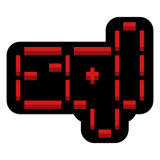

Nmap est un outil de cybersécurité qui s'execute dans un terminal.
Il s'agit d'un scanner de port gratuit.
L'on peut s'en servir pendant la collecte de renseignement
ou pendant l'analyse de vulnérabilité.

sqlmap est un outil de test d'intrusion qui s'execute également dans un terminal.
C'est un logiciel gratuit
qui automatise le processus de détection et d'exploitation des failles d'injection SQL.